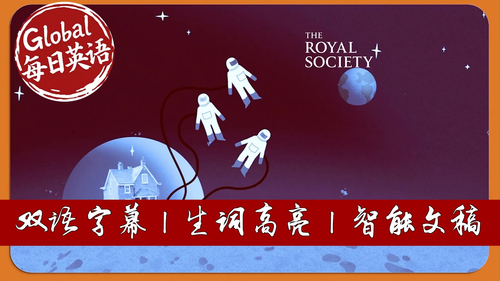

【太空探索四大突破：太空电梯成真、小行星采矿致富、火星殖民生存、轨道数据中心崛起】
Summary: Scientists explore four plausible advancements in space technology that could become reality within our lifetimes. The concept of space elevators using materials like graphene could revolutionize orbital transport and enable interplanetary travel. Asteroid mining offers access to immense mineral wealth while potentially reducing Earth's environmental burden from resource extraction. Establishing permanent settlements on Mars presents extreme challenges but may be achievable with technological aids like robotic exoskeletons. The growing satellite network risks triggering Kessler Syndrome, though space-based manufacturing and orbital data centers could emerge as sustainable solutions.
摘要： 科学家预测本世纪可能实现的四大太空突破。基于石墨烯材料的太空电梯将彻底改变轨道运输方式，实现行星际旅行。小行星采矿不仅能获取价值数万亿的矿物资源，更有望减轻地球生态开采压力。火星永久定居点虽面临大气毒性土壤等生存挑战，但可通过机器人外骨骼等技术辅助实现。尽管卫星激增可能引发凯斯勒综合征链式反应，但太空制造和轨道数据中心或将成为可持续解决方案。

⏱️ Estimated Reading Time: 7 min.
📚 四级生词 📚 六级生词 📚 雅思生词 📚 托福生词 📚 专八生词 📚 SAT生词 📚 考研生词 📚 GRE生词
We can't predict the future, and when it comes to imagining the future of space exploration,
it's easy for things to get a little, well, sci-fi.
But what if they're not?
Here are four things that could actually happen in our lifetimes.
For decades, science fiction writers have imagined a future
where space elevators transport us almost effortlessly into orbit.
Scientists now believe that this could, in theory, become reality,
using new materials like graphene, thought to be the strongest of all known materials.
Picture this.
A docking station.
Somewhere on Earth, with an ultra-strong and super-light weight to have a cable,
which would crawl up like a lift into orbit.
Space elevators could also transport things between planets and moons.
That could be useful, for example, on Mars, which has a very thin atmosphere,
making it really hard to land a spacecraft.
A quick space elevator trip between Mars' moon, Phobos,
and the Martian surface could make things much easier.
Space tourism could become a very real thing.
You take a space elevator to the orbit and then take another mode of transport to your destination.
Day trip to the moon, anyone?
The planets, moons, and asteroids in our solar system, are packed with rare materials,
such as nickel, iron, and cobalt, which are used for batteries, electronics,
and many low carbon technologies.
The most valuable asteroid in the solar system is 511 Davida,
whose value is estimated at 27 quintillion dollars.
That's 27 and 18 zeros.
Meanwhile, other objects in the asteroid belt a full of diamonds.
We could potentially reduce damage to the Earth's ecosystem by shifting the mining of many resources to space.
Some companies and governments are already interested in exploring this, but is it theirs to exploit?
In the near future, space mining is more likely to be used to make human populations in space self-sufficient.
Supplying fuels and materials to space stations and settlements on the moon and Mars,
much easier than taking it with us from Earth.
In the next 50 years, it's very possible that the surface of the moon
will be dominated by industrial scale mining and giant structures that we felt from the materials we might.
In 50 years time, there may well be permanent settlements on Mars,
but life for those early explorers will be tough as no breathable atmosphere,
relentless dust storms and experience temperatures.
These pioneers will face lots of challenges to grow and sustain a human presence on Mars.
For example, how to grow food?
Martian soil is full of chemicals toxic to humans, meaning that any food grown there would be lethal.
Humans living on Mars may need all sorts of gadgets and gizmos to help them cope in that environment,
such as robotic exoskeletons to counteract muscle wastage and loss in bone density.
Satellites orbiting the Earth tell us the weather, provide GPS navigation and climate modelling.
And since 2019, the number of satellites orbiting Earth has increased from approximately 2000 to more than 10,000.
Every time a satellite collides with a piece of space junk, it increases the chance of future collisions.
This could set off a chain reaction known as Kessless Syndrome,
where the Earth is surrounded by so much space junk that launching anything into space becomes risky.
But there's huge potential too.
Some chemical reactions happen differently in space.
3D printing in microgravity works really well, for example, much better than on Earth,
making it possible to create replacement organs in space.
Global electricity demand has skyrocketed due to advances in AI.
Google's greenhouse gas emissions alone have risen 48% in five years.
In the future, power hungry data centers could be located in orbit,
fed by the plentiful renewable energy from giant solar panels.
And manufacturing in space could become a thing.
Who knows, maybe the label on your next prescription or a t-shirt might one day say made in space.